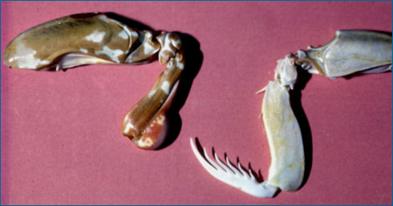
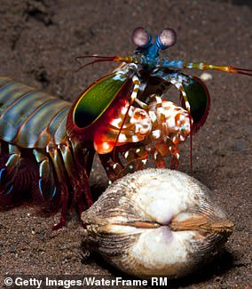

Fatos sobre o Stomatopoda
Stomatopoda
Stomatopoda (ou estomatópode), chamados popularmente de tamarutacas ou delacraias-do-mar no Brasil, é uma ordem de crustáceos marinhos da subclasse Hoplocarida, queagrupa cerca de 400 espécies, caracterizadas principalmente pelamorfologia da segunda pata torácica, que é modificada em apêndice subquelado,lembrando uma pata delouva-a-deus.[2]
Descrição
Carnívoros
Os estomatópodes são predadores ativos que caçam presas com o auxílio de umsentido de visão muito apurado e capaz de interpretar polarização no espectroultravioleta e infravermelho). Apresentam uma grande variação de tamanho, que pode irde poucos milímetros até aproximadamente 40 cm nas espécies maiores. Eles vivem em fundoconsolidado, lodoso ou ainda arenoso, onde cavam seus buracos ou aproveitam-sedos orifícios deixados por outros animais para neles se instalar. Sãoanimaisexclusivamente carnívoros, alimentando-se de camarões, caranguejos, moluscos, peixese até mesmo outros da mesma ordem. O segundo par de patas, muitodesenvolvido, éusado tanto para atacar a presa como para se defender. O urópodo, quando aberto,também funciona para defesa, como um escudo, fechando a galeria em que oanimalesteja instalado. A fêmea desova no local onde se abriga e, em caso de perigo, enrolaos ovos como uma bola, prendendo-os junto ao corpo até encontrar um abrigomaisprotegido.

Ovos
Também conhecidas como esquilas ou lagosta-boxeadora, espalhadas pelas costas dosmares tropicais e subtropicais. Além das patas, elas apresentam uma silhueta característica, devido ao grande comprimento aparentemente de seu abdómen. Os ovos ficam ligados por uma massa gelatinosa que a mãe carrega contra o ventre atéque eclodem, limpando-os sem parar.

Tipos
São animais que apresentam comportamentos sociais muito variados, desde ameaçasvisuais contra predadores até comportamentos de côrte. De acordo com a anatomia dasuapata raptorial é possível distinguir entre dois grupos funcionais, asperfuradoras (spearers) ou as esmagadoras (smashers), sendo que cada um dos tiposapresenta suaprópria variação comportamental e até mesmo de habitat.
Super soco
As maiores esmagadoras, tais como exemplares de Odontodactylus scyllarus, são capazes de desferir um dos mais rápidos e violentos golpes do reino animal, um socoquepode apresentar a velocidade de um tiro calibre .22 (equivalente a 720 km/h) euma pressão de impacto de 600 N/cm².[3] Essa força esmagadora é a responsável peloseutítulo de "lagosta-boxeadora" e é capaz de facilmente quebrar a carapaça de umcaranguejo, as conchas duras e calcificadas de gastrópodes ou até mesmo quebrar ovidroreforçado de um aquário.
Litoral
Estomatópodes podem ser encontrados em quase todo o litoral brasileiro, mas não são animais fáceis de se observar pelos seus hábitos mais furtivos. Devem ser manuseados com muita cautela pois são animais preparados para se defender com força,caso sejam incomodados.